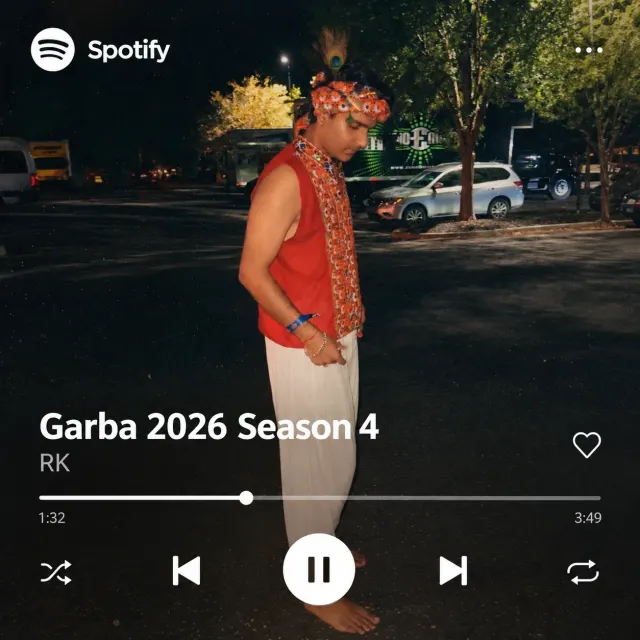

Haitish Puran / The Everyday Journal
A little beyond the job title.
Things I'm trying. Things I'm noticing. And a few thoughts I want to come back to.
A few moments off the clock.

On repeat
Garba season, on a loop.
Some of my favorite nights are spent dancing Garba. This is what the soundtrack to the season looks like — press play and imagine the dhol.
Garba 2026 · Season 4
The latest notes
Loading the journal...